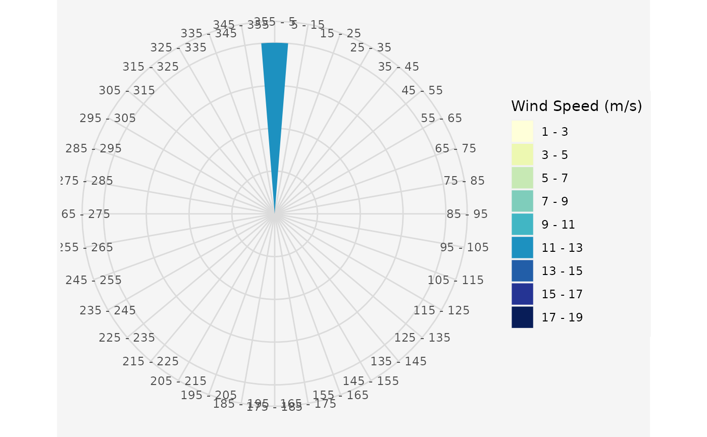

Run a Genetic Algorithm to optimize a wind farm layout
Source:R/genetic_algorithm.R
genetic_algorithm.RdRun a Genetic Algorithm to optimize the layout of wind turbines on a given area. The algorithm works with a fixed amount of turbines, a fixed rotor radius and a mean wind speed value for every incoming wind direction.
genetic_algorithm( Polygon1, GridMethod, Rotor, n, fcrR, referenceHeight, RotorHeight, SurfaceRoughness, Proportionality, iteration, mutr, vdirspe, topograp, elitism, nelit, selstate, crossPart1, trimForce, Projection, sourceCCL, sourceCCLRoughness, weibull, weibullsrc, Parallel, numCluster, verbose = FALSE, plotit = FALSE )
Arguments
| Polygon1 | The considered area as SpatialPolygon, SimpleFeature Polygon or coordinates as matrix/data.frame |
|---|---|
| GridMethod | Should the polygon be divided into rectangular or hexagonal grid cells? The default is "Rectangular" grid. Hexagonal grids are computed when assigning "h" or "hexagon" to this input variable. |
| Rotor | The rotor radius in meter |
| n | The amount of turbines |
| fcrR | A numeric value used for grid spacing. Default is |
| referenceHeight | The height at which the incoming wind speeds were
measured. Default is |
| RotorHeight | The height of the turbine hub |
| SurfaceRoughness | A surface roughness length in meters.
With the terrain effect model, a surface roughness is calculated for every
grid cell using the elevation and land cover data. Default is |
| Proportionality | A numeric value used for the grid calculation, as it
determines the percentage a grid cell must overlay the area.
Default is |
| iteration | The number of iterations. Default is |
| mutr | A numeric mutation rate. Default is |
| vdirspe | A data.frame containing the wind speeds, directions and
probabilities. See |
| topograp | Boolean value, which indicates if the terrain effect model
should be enabled or not. Default is |
| elitism | Boolean value, which indicates whether elitism should be
activated or not. Default is |
| nelit | If |
| selstate | Determines which selection method is used, "FIX" selects a constant percentage and "VAR" selects a variable percentage, depending on the development of the fitness values. Default is "FIX" |
| crossPart1 | Determines which crossover method is used, "EQU" divides
the genetic code at equal intervals and "RAN" divides the genetic code at
random locations. Default is |
| trimForce | If |
| Projection | A spatial reference system. Depending on your PROJ-version,
it should either be a numeric `EPSG-code` or a `Proj4-string`.
Default is |
| sourceCCL | The path to the Corine Land Cover raster (.tif). Only required when the terrain effect model is activated. |
| sourceCCLRoughness | The source to the adapted Corine Land Cover legend
as .csv file. Only required when terrain effect model is activated. As
default a .csv file within this package ( |
| weibull | A boolean value that specifies whether to take Weibull
parameters into account. If |
| weibullsrc | A list of Weibull parameter rasters, where the first list
item must be the shape parameter raster `k` and the second item must be the
scale parameter raster `a` of the Weibull distribution. If no list is given,
then rasters included in the package are used instead, which currently only
cover Austria. This variable is only used if |
| Parallel | A boolean value, indicating whether parallel processing should
be used. The *parallel* and *doParallel* packages are used for parallel
processing. Default is |
| numCluster | If |
| verbose | If TRUE it will print information for every generation.
Default is |
| plotit | If TRUE it will plot the best windfarm of every generation.
Default is |
Value
The result is a matrix with aggregated values per generation; the best individual regarding energy and efficiency per generation, some fuzzy control variables per generation, a list of all fitness values per generation, the amount of individuals after each process, a matrix of all energy, efficiency and fitness values per generation, the selection and crossover parameters, a matrix with the generational difference in maximum and mean energy output, a matrix with the given inputs, a dataframe with the wind information, the mutation rate per generation and a matrix with all tested wind farm layouts.
Details
A terrain effect model can be included in the optimization process.
Therefore, a digital elevation model will be downloaded automatically via the
elevatr::get_elev_raster function. A land cover raster can also be
downloaded automatically from the EEA-website, or the path to a raster file
can be passed to sourceCCL. The algorithm uses an adapted version of the
Raster legend ("clc_legend.csv"), which is stored in the package directory
~/inst/extdata. To use other values for the land cover roughness
lengths, insert a column named "Rauhigkeit_z" to the .csv file,
assign a surface roughness length to all land cover types. Be sure that all
rows are filled with numeric values and save the file with ";"
separation. Assign the path of the file to the input variable
sourceCCLRoughness of this function.
See also
Other Genetic Algorithm Functions:
crossover(),
fitness(),
init_population(),
mutation(),
selection(),
trimton(),
windfarmGA()
Examples
# \donttest{ ## Create a random rectangular shapefile library(sf) Polygon1 <- sf::st_as_sf(sf::st_sfc( sf::st_polygon(list(cbind( c(4498482, 4498482, 4499991, 4499991, 4498482), c(2668272, 2669343, 2669343, 2668272, 2668272)))), crs = 3035 )) ## Create a uniform and unidirectional wind data.frame and plot the ## resulting wind rose data.in <- data.frame(ws = 12, wd = 0) windrosePlot <- plot_windrose(data = data.in, spd = data.in$ws, dir = data.in$wd, dirres=10, spdmax=20)## Runs an optimization run for 20 iterations with the ## given shapefile (Polygon1), the wind data.frame (data.in), ## 12 turbines (n) with rotor radii of 30m (Rotor) and rotor height of 100m. result <- genetic_algorithm(Polygon1 = Polygon1, n = 12, vdirspe = data.in, Rotor = 30, RotorHeight = 100)#> ....................#> [1] "plot_result: Plot the 'best' Individuals of the GA:" #> N different optimal configurations: 9 #> Amount duplicates: 11 #> Plot 1 Best Energy Solution:#> Press [enter] to continue #> [1] "plot_evolution: Plot the Evolution of the Efficiency and Energy Values:"#> [1] "plot_parkfitness: Plot the Influence of Population Size, Selection, Crossover, Mutation:"#> Press [enter] to continue #> [1] "plot_fitness_evolution: Plot the Changes in Fitness Values:"#> Press [enter] to continue #> [1] "plot_cloud: Plot all individual Values of the whole Evolution:"#> Press [enter] to continue #> [1] "plot_heatmap: Plot a Heatmap of all Grid Cells:"#> Warning: NAs introduced by coercion#> Warning: NAs introduced by coercion#> Warning: NAs introduced by coercion#> Warning: NAs introduced by coercion#> Warning: NAs introduced by coercion#> Warning: NAs introduced by coercion#> Warning: NAs introduced by coercion#> Warning: NAs introduced by coercion#> Warning: NAs introduced by coercion#> Warning: NAs introduced by coercion#> Warning: NAs introduced by coercion#> Warning: NAs introduced by coercion#> Warning: NAs introduced by coercion#> Warning: NAs introduced by coercion#> Warning: NAs introduced by coercion#> Warning: NAs introduced by coercion#> Warning: NAs introduced by coercion#> Warning: NAs introduced by coercion#> Warning: NAs introduced by coercion#> Warning: NAs introduced by coercion#> Warning: NAs introduced by coercion#> Warning: NAs introduced by coercion#> Warning: NAs introduced by coercion#> Warning: NAs introduced by coercion#> Warning: NAs introduced by coercion#> Warning: NAs introduced by coercion#> Warning: NAs introduced by coercion#> Warning: NAs introduced by coercion#> Warning: NAs introduced by coercion#> Warning: NAs introduced by coercion#> Warning: NAs introduced by coercion#> Warning: NAs introduced by coercion#> Warning: NAs introduced by coercion#> Warning: NAs introduced by coercion#> Warning: NAs introduced by coercion#> Warning: NAs introduced by coercion#> Warning: NAs introduced by coercion#> Warning: NAs introduced by coercion#> Warning: NAs introduced by coercion#> Warning: NAs introduced by coercion#> Warning: NAs introduced by coercion#> Warning: NAs introduced by coercion#> Warning: NAs introduced by coercion#> Warning: NAs introduced by coercion#> Warning: NAs introduced by coercion#> Warning: NAs introduced by coercion#> Warning: NAs introduced by coercion#> Warning: NAs introduced by coercion#> Warning: NAs introduced by coercion#> Warning: NAs introduced by coercion#> Warning: NAs introduced by coercion#> Warning: NAs introduced by coercion#> Warning: NAs introduced by coercion#> Warning: NAs introduced by coercion#> Warning: NAs introduced by coercion#> Warning: NAs introduced by coercion#> Warning: NAs introduced by coercion#> Warning: NAs introduced by coercion#> Warning: NAs introduced by coercion#> Warning: NAs introduced by coercion#> Warning: NAs introduced by coercion#> Warning: NAs introduced by coercion#> Warning: NAs introduced by coercion#> Warning: NAs introduced by coercion#> Warning: NAs introduced by coercion#> Warning: NAs introduced by coercion#> Warning: NAs introduced by coercion#> Warning: NAs introduced by coercion#> Warning: NAs introduced by coercion#> Warning: NAs introduced by coercion#> Error in st_as_sf.data.frame(bpenew, coords = c("X", "Y")): missing values in coordinates not allowed# }